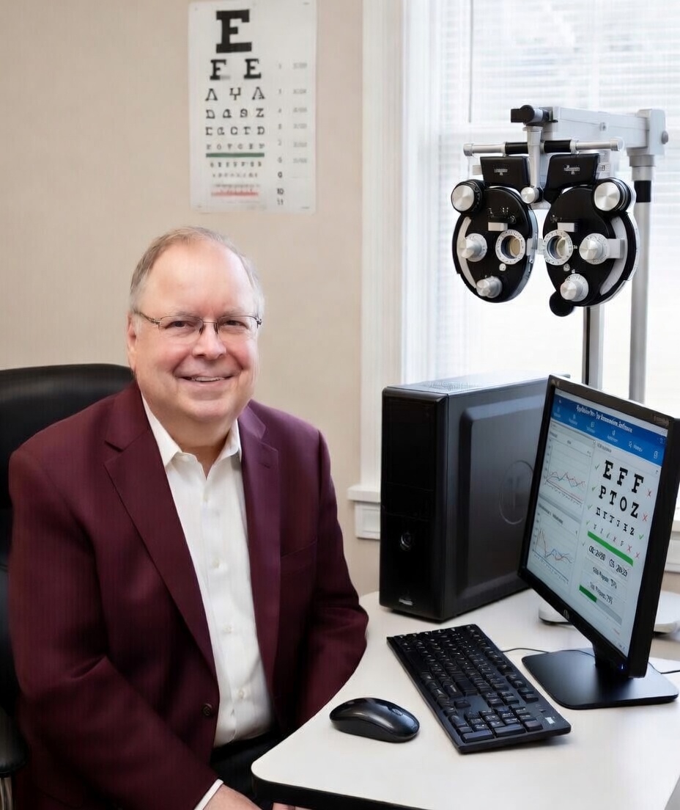
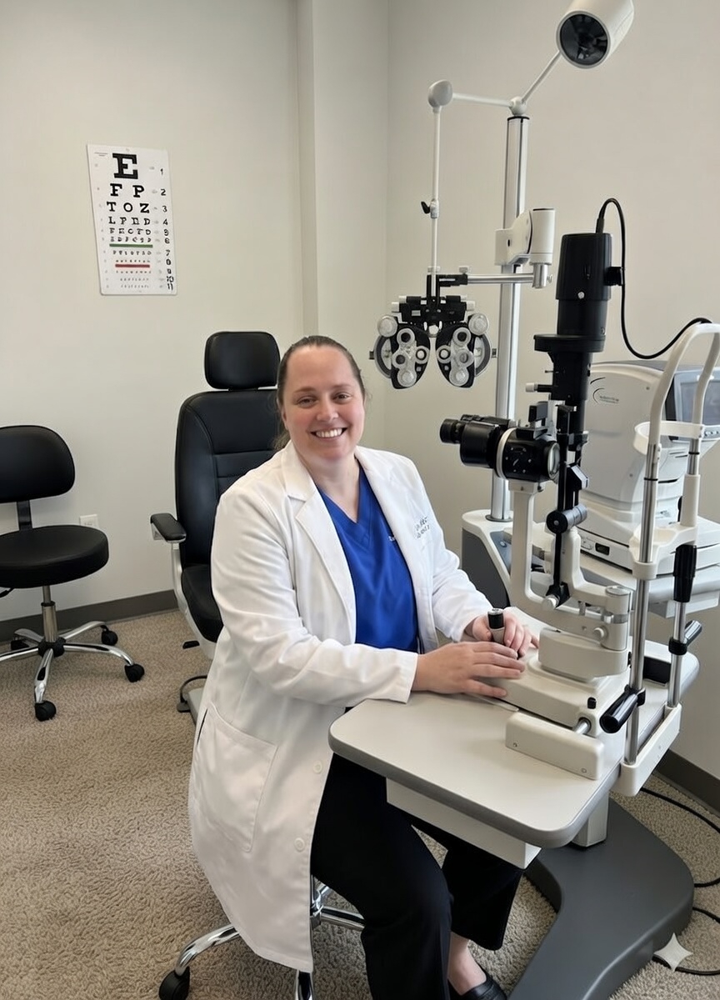

Expansive Collection
Ray-Ban, Calvin Klein Jeans, bebe, and many more. From designer to budget friendly.
Experience the perfect blend of clinical excellence and timeless style at Pal Optical, Lexington's Eyewear and Eyecare experts since 1955.
Ray-Ban, Calvin Klein Jeans, bebe, and many more. From designer to budget friendly.
Dr. Steven Klecker O.D. and Dr. Kathryn Robbins O.D. provide comprehensive eye exams using state-of-the-art technology.
Most Medicaid except United Healthcare and Passport, EyeMed, VSP, Spectera, UHC Medicare, March Vision, Aetna, NVA, and Premier Vision/Ambetter.
The Collection


Our Specialists
With decades of combined experience, our on-site optometrists are dedicated to preserving your vision. From routine checkups to specialized eye care, you're in expert hands.
To schedule an appointment call (859) 269-6921 today.
Optometrist
Dr. Klecker has been bringing quality eyecare to Central Kentucky since 1976. Taking over from Dr. Abel, the original owner of Pal Optical, Pal has blossomed under his bright and eager approach to ocular health.
Optometrist
Dr. Kathryn Robbins is the daughter of Dr. Steven Klecker and his wife, Carol. She was born and raised right here in Lexington, Kentucky. Dr. Robbins is a 1996 graduate of Lexington Catholic High School and a 2000 graduate of the University of Dayton in Dayton, Ohio.
Dr. Robbins earned a Bachelor of Science degree in biology, a minor in management at University of Dayton, and is a 2005 graduate of Southern College of Optometry in Memphis, Tennessee. After spending many summers working various jobs at Pal Optical, as well as Dr. Klecker's office, she knows the ins and outs of the company.